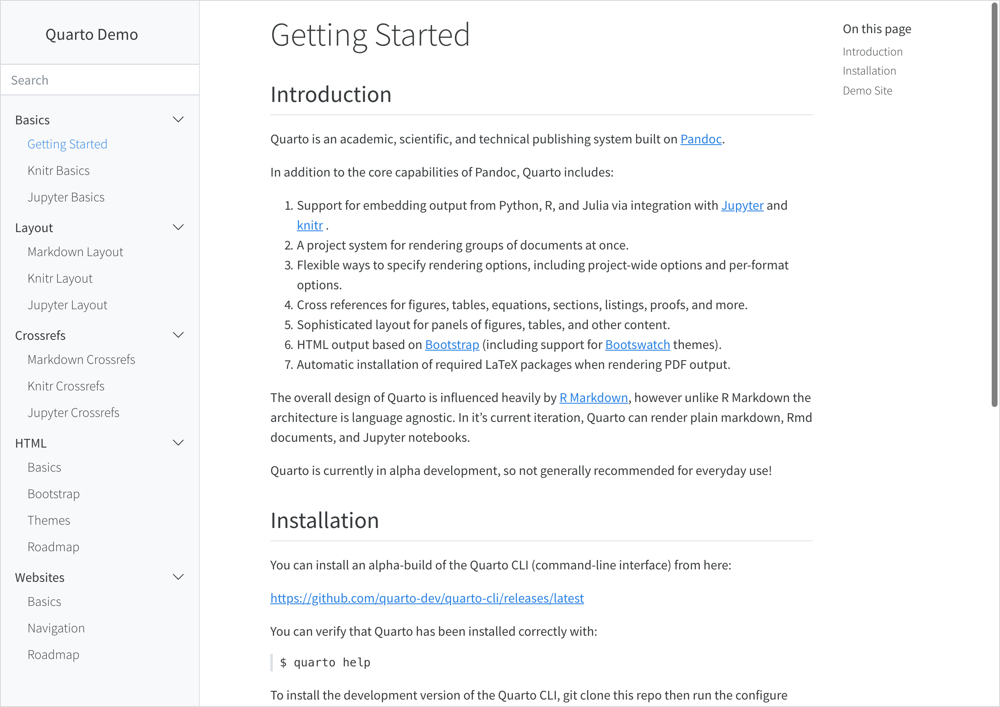
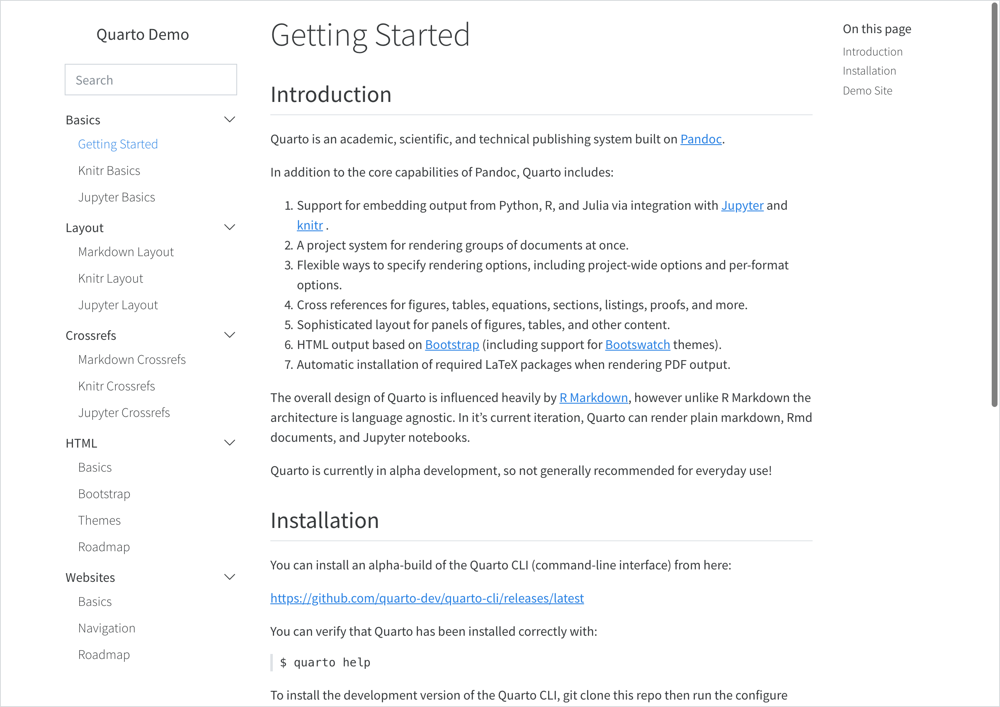
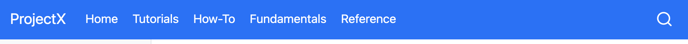
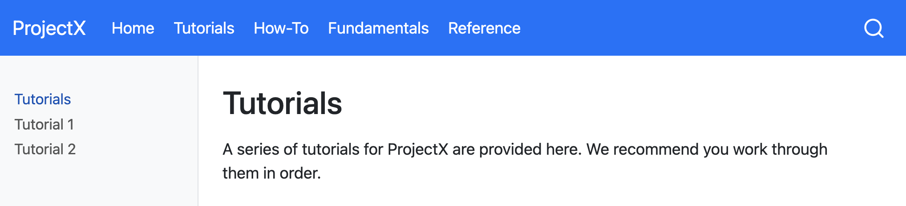
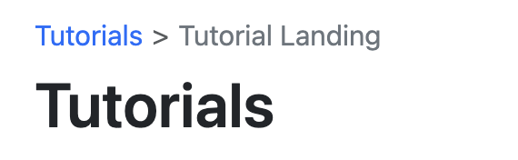
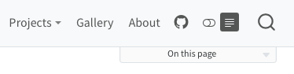
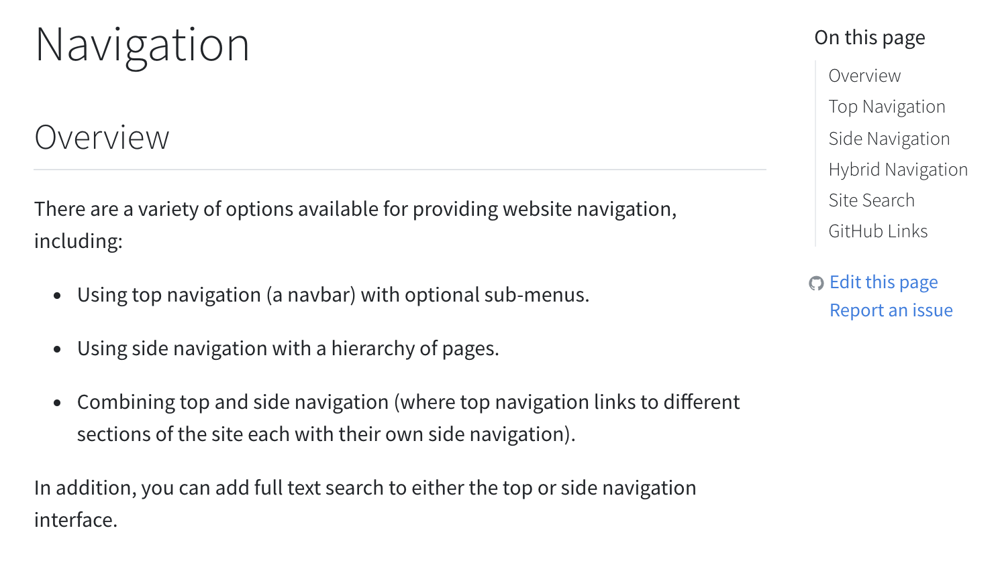

Results in a navigation bar that looks something like this:
Above we use the left option to specify items for the left side of the navigation bar. You can also use the right option to specify items for the right side.
The text for navigation bar items will be taken from the underlying target document’s title. Note that in the above example we provide a custom text: "Home" value for index.qmd.
You can also create a navigation bar menu by including a menu (which is a list of items much like left and right). For example:
left:-text:"More"menu:- talks.qmd- about.qmd
Here are all of the options available for top navigation:
Option
Description
title
Navbar title (uses the site: title if none is specified). Use title: false to suppress the display of the title on the navbar.
logo
Logo image to be displayed left of the title.
logo-alt
Alternate text for the logo image.
logo-href
Target href from navbar logo / title. By default, the logo and title link to the root page of the site (/index.html).
background
Background color (“primary”, “secondary”, “success”, “danger”, “warning”, “info”, “light”, “dark”, or hex color).
foreground
Foreground color (“primary”, “secondary”, “success”, “danger”, “warning”, “info”, “light”, “dark”, or hex color). The foreground color will be used to color navigation elements, text and links that appear in the navbar.
search
Include a search box (true or false).
tools
List of navbar tools (e.g. link to github or twitter, etc.). See Navbar Tools for details.
left / right
Lists of navigation items for left and right side of navbar.
pinned
Always show the navbar (true or false). Defaults to false, and uses headroom.js to automatically show the navbar when the user scrolls up on the page.
collapse
Collapse the navbar items into a hamburger menu when the display gets narrow (defaults to true).
collapse-below
Responsive breakpoint at which to collapse navbar items to a hamburger menu (“sm”, “md”, “lg”, “xl”, or “xxl”, defaults to “lg”).
toggle-position
The position of the collapsed navbar hamburger menu when in responsive mode (“left” or “right”, defaults to “left”).
Here are the options available for individual navigation items:
Option
Description
href
Link to file contained with the project or external URL.
text
Text to display for navigation item (defaults to the document title if not provided).
icon
Name of one of the standard Bootstrap 5 icons (e.g. “github”, “twitter”, “share”, etc.).
Value for rel attribute. Multiple space-separated values are permitted.
menu
List of navigation items to populate a drop-down menu.
For more information on controlling the appearance of the navigation bar using HTML themes, see HTML Themes - Navigation.
Navbar Tools
In addition to traditional navigation, the navbar can also display a set of tools (e.g. social actions, GitHub view or edit actions, etc.) A tool definition consists of an icon name and an href to follow when clicked. For icon, use the icon name of any of the 1,300+ Bootstrap Icons.
Tools specified for a navigation bar will appear on the right side of the Navbar. If you specify a dark theme or reader mode for your website, the controls for those options will appear with any specified tools.
When the navbar is collapsed into a menu on smaller screens, the tools will be placed at the bottom of the menu.
Side Navigation
If your site consists of more than a handful of documents, you might prefer to use side navigation, which enables you to display an arbitrarily deep hierarchy of articles.
If you are reading this page on a desktop device then you will see the default side navigation display on the left (otherwise you’ll see a title bar at the top which you can click or touch to reveal the navigation).
To add side navigation to a website, add a sidebar entry to the website section of _quarto.yml. For example:
There are two styles of side navigation available: “docked” which shows the navigation in a sidebar with a distinct background color, and “floating” which places it closer to the main body text. Here’s what the “docked” and “floating” styles look like (respectively):


Here are all of the options available for side navigation:
Option
Description
id
Optional identifier (used only for hybrid navigation, described below).
title
Sidebar title (uses the project title if none is specified).
subtitle
Optional subtitle.
logo
Optional logo image.
search
Include a search box (true or false). Note that if there is already a search box on the top navigation bar it won’t be displayed on the sidebar.
tools
List of sidebar tools (e.g. link to github or twitter, etc.). See the next section for details.
contents
List of navigation items to display (typically top level items will in turn have a list of sub-items).
style
“docked” or “floating”.
type
“dark” or “light” (hint to make sure the text color is the inverse of the background).
background
Background color (“none”, “primary”, “secondary”, “success”, “danger”, “warning”, “info”, “light”, “dark”, or “white”). Defaults to “light”.
foreground
Foreground color (“primary”, “secondary”, “success”, “danger”, “warning”, “info”, “light”, “dark”, or hex color). The foreground color will be used to color navigation elements, text and links that appear in the sidebar.
border
Whether to show a border on the sidebar. “true” or “false”.
alignment
Alignment (“left”, “right”, or “center”).
collapse-level
Whether to show sidebar navigation collapsed by default. The default is 2, which shows the top and next level fully expanded (but leaves the 3rd and subsequent levels collapsed).
pinned
Always show a title bar that expands to show the sidebar at narrower screen widths (true or false). Defaults to false, and uses headroom.js to automatically show the navigation bar when the user scrolls up on the page.
A single sidebar item without an id or title will result in a global sidebar applied to all pages. A sidebar with an id or title will only be applied to pages within the contents of the sidebar or pages that specify the sidebar id.
Above we describe how to explicitly populate the contents of your sidebar with navigation items. You can also automatically generate sidebar navigation from the filesystem. The most straightforward way to do this is to specify the contents option as follows:
sidebar:contents: auto
Using contents: auto at the root level will result in all documents in your website being included within the navigation (save for the home page which can be navigated to via the title link). Navigation is constructed using the following rules:
Navigation item titles will be read from the title field of documents.
Sub-directories will create sections and will be automatically titled based on the directory name (including adding capitalization and substituting spaces for dashes and underscores). Use an index.qmd in the directory to provide an explicit title if you don’t like the automatic one.
Order is alphabetical (by filename) unless a numeric order field is provided in document metadata.
Automatic navigation automatically includes items in sub-directories. If you prefer not to do this, use an explicit /* to indicate only the documents in the root directory:
sidebar:contents: /*
Rather than specifying that all documents should be included, you can also specify a directory name or a glob pattern. For example, the following values for contents are all valid (note that the second form for reports is non-recursive):
Note that in YAML we need to quote any strings that begin with * (as we do above for *.ipynb).
You can automatically build sidebar contents anywhere within a sidebar hierarchy. For example, here we add a section that is automatically generated from a directory:
You can also include automatically generated items in the middle of a list of normal items by including an item with an auto property. Here we add an auto entry in the middle of a list of items:
Note again that we quote the auto entry with a * in it so that it is correctly parsed.
Sidebar Tools
In addition to traditional navigation, the sidebar can also display a set of tools (e.g. social actions, GitHub view or edit actions, etc.) A tool definition consists of an icon name and an href to follow when clicked. For icon, use the icon name of any of the 1,300+ Bootstrap Icons.
If you have a website with dozens or even hundreds of pages, you will likely want to use top and side navigation together, where the top navigation links to various sections, each with their own side navigation.
To do this, provide a group of sidebar entries and link each group of sidebar entries with a navbar entry by matching their titles and listing the page linked from the navbar as the first content in the sidebar group. For example, if you are using the Diátaxis Framework for documentation, you might have separate sections for tutorials, how-to guides, explanations, and reference documents, your page might look like the following.

With hybrid navigation, if then you click on, say, Tutorials, you might land in a page like the following.

To achieve this layout, your site configuration needs to look something like this:
Note that the first sidebar definition contains a few options (e.g. style and background). These options are automatically inherited by the other sidebars.
An alternative approach is to make the sidebar entries available from a drop down menu from the navbar items they’re grouped with. To do this, provide a list of sidebar entries and give them each an id, which you then use to reference them from the navbar.
注解
A page that doesn’t appear in any sidebar will inherit and display the first sidebar without an id or title - you can prevent the sidebar from showing on a page by setting sidebar: false in it’s front matter.
To achieve this, your site configuration needs to look something like this:
By default, navigational breadcrumbs are displayed above the page title on each page that is nested deeper than one level in the sidebar navigation. For example, given this sidebar definition:
The page tutorials.html contains the following breadcrumb:
 Tutorial Landing'.">
You can disable breadcrumbs for a website using the bread-crumbs option:
_quarto.yml
website:bread-crumbs:false
Page Navigation
If you have a website with several pages in a section or subsection, it is often convenient to offer the user the ability to navigate to the next page (or previous page) at the bottom of the page that they’ve just finished reading. You can enable this using:
website:page-navigation:true
When enabled, page navigation will be displayed at the bottom of the page whenever there is a next or previous page (including in the next or previous section). This option is enabled by default for books but not for websites.
You can also enable or disable page navigation at the page level by specifying page-navigation in the YAML header, e.g.:
basics.qmd
---page-navigation:false---
Or to control page navigation for all pages in a directory specify page-navigation in _metadata.yml:
_metadata.yml
page-navigation:false
Separators
If you include a page separator in the sidebar (either between sections or items), page navigation controls will not appear to continue pagination across the separator. For example, in the following sidebar:
When the user reaches the bottom of document3.qmd, they will see previous navigation to go back to document2.qmd, but they will not see next navigation to continue onto document 4. This behavior is useful when you have sections of contents that don’t naturally flow together in sequential order. Use the separator to denote this in the sidebar with a horizontal line and to break up pagination.
Back to Top
You can include a “Back to top” link at the bottom of documents in a website using the back-to-top-navigation option. For example:
website:back-to-top-navigation:true
Note that you can disable back to top navigation on a page by page basis by specifying back-to-top-navigation: false.
Page Footer
Use the page-footer option to provide a common footer for all of the pages in a website. The simplest footer just provides text that will be centered and displayed in a lighter typeface:
website:page-footer:"Copyright 2021, Norah Jones"
You can alternatively target the left, right, and center regions of the footer individually:
Note for the right region of the footer we included navigational items for GitHub and Twitter rather than text. You can include navigational items in any region of the footer.
You can use the background, foreground, and border options to further control the appearance of the footer. By default, the footer has no background color and a top border. To eliminate the border you would do this:
website:page-footer:border:false
To use a light background (e.g. to match a navigation bar) you would do this:
website:page-footer:background: light
Unless specified, the color (foreground) used for elements that appear in the footer will be automatically determined by using a color that contrasts with the footer background.
Hiding Navigation
For some pages (especially those with a completely custom layout) you can hide navigation altogether (navbar, sidebar, or both). In these case, add the following to the page front matter:
# Hides the sidebar on this pagesidebar:false# Hides the navbar on this pagenavbar:false
Reader Mode
If you’d like users to be able to hide the side navigation and table of contents and have a more focused reading experience, you can enabled reader-mode. When enabled, a reader-mode toggle will appear on the navbar, if present, or on the sidebar. When pressed, the toggle will ‘roll up’ the sidebar and table of contents.

To enable reader-mode, use the following in your project:
website:reader-mode:true
Site Search
You can add site search by including search: true in either your site-navbar or site-sidebar configuration. For example:
You can add various links (e.g. to edit pages, report issues, etc.) to the GitHub repository where your site source code is hosted. To do this, add a repo-url along with one or more actions in repo-actions. For example:
The links will be displayed immediately below the page’s table of contents:

There are a couple of additional options that enable you to customize the behavior of repository links:
Option
Description
repo-subdir
Subdirectory of repository containing source files (defaults to root directory).
repo-branch
Repository branch containing the source files (defaults to main)
issue-url
Provide an explicit URL for the ‘Report an Issue’ action.
repo-link-target
The target attribute to use for repo action links. E.g. set to “_blank” to open in a new tab or window.
repo-link-rel
The rel attribute to use for repo action links.
If you want to suppress the GitHub links on a specific page, you can set repo-actions to false in the document YAML:
page.qmd
---repo-actions:false---
Redirects
If you rename or move a page on your site, you may want to create redirects from the old URLs so that existing links don’t break. You can do this by adding aliases from old pages to renamed pages.
For example, let’s say you renamed page.qmd to renamed-page.qmd. You would add the following aliases entry to renamed-page.qmd to create the redirect:
---title:"Renamed Page"aliases:- page.html---
This can also be useful for situations where you re-organize content on your site into a different directory hierarchy or break one large article into smaller ones. For this case, you may want to add the URL hash of the section that you have broken into a new page. For example:
Depending on where you are deploying your site there may be more powerful tools available for defining redirects based on patterns. For example, Netlify _redirects files or .htaccess files. Search your web host’s documentation for “redirects” to see if any of these tools are available.
404 Pages
When a browser can’t find a requested web page, it displays a 404 error indicating that the file can’t be found. Browser default 404 pages can be pretty stark, so you may want to create a custom page with a more friendly message and perhaps pointers on how users might find what they are looking for.
Most web serving platforms (e.g. Netlify, GitHub Pages, etc.) will use a file named 404.html in the root of your website as a custom error page if you provide it. You can include a custom 404 page in a Quarto website by creating a markdown file named 404.qmd in the root of your project. For example:
---title: Page Not Found---The page you requested cannot be found (perhaps it was moved or renamed).You may want to try searching to find the page's new location.
Note that you can use HTML alongside markdown within your 404.qmd file in order to get exactly the appearance and layout you want.
Your 404 page will appear within the chrome of your site (e.g. fonts, css, layout, navigation, etc.). This is so that users don’t feel that they’ve irrecoverably “left” your site when they get a 404 error. If you don’t want this behavior, then provide a 404.html rather than 404.qmd.
If your website is served from the root of a domain (e.g. https://example.com/) then simply providing a 404.qmd file as described above is all that’s required to create a custom 404 page.
However, if your website is not served from the root of a domain then you need to provide one additional bit of configuration to make sure that resources (e.g. your site’s CSS) are resolved correctly within 404 pages.
For example, if your site is served from https://example.com/mysite/ then you’d add the following to your project website configuration within _quarto.yml:
website:title:"My Site"site-path:"/mysite/"
Note that if you are already providing a site-url (which is required for generation of sitemaps and social metadata preview images) then it’s enough to simply include the path within the site-url: